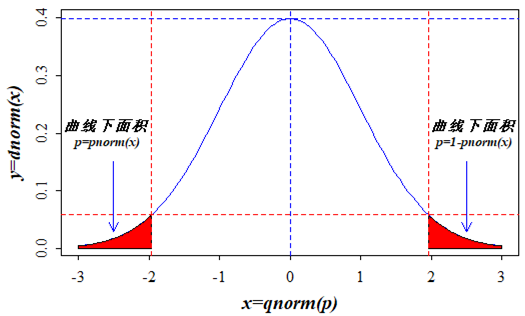

2 R语言编程基础
与通用编程语言Python等不同，R是一种主要用于数据处理、统计分析、可视化以及沟通的统计编程语言和操作环境，语法通俗易懂，易于学习并掌握。R是属于GNU系统的一个自由、免费、源代码开放的软件，与SAS、SPSS等相比，用户可以在R中获得最新的统计方法和技术。R具有优秀的交互性，和Matlab一样，既可以从命令行运行，也可以编写脚本程序。此外，R通过R Markdown和Quarto，将文本、图表、代码及运行结果融为一体，形成沟通性极好的可重复的报告。
R在数据科学领域具有优势，其劣势在于代码执行效率低于编译执行的编程语言，内存管理也被用户诟病。但R语言可以通过Rcpp包实现R与C/C++的混合编程，来提高运算速度和执行效率。随着计算机硬件性能的极大提升，执行速度慢的劣势相对弱化。即使是大数据，R依然能够通过专门的工具包来处理和分析。来自全世界各行各业的专家持续地为R贡献了大量的专业且创新的工具包，为相应领域的专业人员提供了极为灵活和高效的数据处理、统计分析、可视化与建模技术，不断丰富和拓展R的功能。
R作为一套完整的数据(包括大数据)处理、分析、建模和可视化编程软件系统，其功能包括：数据导入和存储(支持多种数据格式以及大数据)、数据整理和转换、矩阵运算、统计分析、可视化(专业统计制图)以及统计学习、机器学习甚至深度学习建模。
R分为基础版和整洁版，前者一般称为base-R，后者一般称为tidy-R，基于tidyverse生态。本章基于RStudio集成开发环境来学习R语言的基础知识，包括帮助系统、工具包的管理、数据类型与结构、常用函数、数据读写、控制结构和自定义函数。
2.1 帮助系统和工具包管理
2.1.1 帮助系统
2.1.1.1 帮助菜单
在RStudio的“Help”菜单中，点击“R Help”菜单项，会在工作界面右下区的Help标签内打开基于HTML格式的帮助系统页面，内容包括： R的学习资源、RStudio的学习资源、R的学习手册、包索引和关键字搜索、其他资料。利用以上资源可以系统地学习R和RStudio的使用。
2.1.1.2 帮助命令
在R中，用户可以在控制台中快捷地获取有关函数或R包的帮助信息。
?包名::函数名：精确查询R包中函数的帮助信息，如?ggplot2::qplot执行。如果包已经加载，则直接执行?函数名，如?qplot。
??关键词：通过关键词进行模糊搜索。等同于help.search(‘关键词’)，注意要加英文引号(单引号和双引号均可)。如??mean。
help(package = 包名)：打开R包的帮助页面，如help(package = mlr3)。
2.1.1.3 帮助图形界面
在RStudio工作界面中Help标签区，有一个关键字搜索的输入框(图 2.1)，也可通过单击“Help”菜单中“Search R Help”或使用组合键Ctrl+Alt+F1Ctrl+Alt+F1快速定位至此，输入关键字来搜索相关的帮助信息。注意组合键可能与其他软件的冲突。
练习 2.1 (1)打开R分别查询函数plot()、summary()、mean()、var()、sd()的帮助信息。
(2)查询stats包的帮助信息。
2.1.2 R包管理
众多工具包为R提供了很多专业功能的扩展。大多数R包集成了封装好的函数、数据和示例。目前，R已经拥有2万多个工具包(其中一些已经停止更新，甚至废弃)，主要存储在CRAN网站，该网站上的R包都经过了严格的审查。另外，Bioconductor网站提供了生物信息学相关的R包，github等网站上也有一些未经官方审查的R包。
R安装后，内置的base、methods、datasets、utils、grDevices、graphics和stats等7个基础工具包随R的启动而自动加载，能够实现基本的数据处理、可视化和统计建模功能。但R的很多专业功能都是由第三方R包提供的，因此,必须掌握R包的查询、安装、更新、卸载和删除等操作。
2.1.2.1 查询R包
CRAN网站提供了Task Views来归类众多的工具包，用户可从中查询相关的R包。例如有关空间数据分析的R包，可在Spatial和SpatioTemporal中查询。有关生态环境数据分析的R包，可在Environmetrics中查询。有关高性能计算和大数据处理的R包，可在HighPerformanceComputing中查询。有关机器学习的R包可在MachineLearning中查询。R包packagefinder提供了从R中控制台直接搜索CRAN网站上R包的功能。R包ctv提供了在本地安装任务分类视图和查询的功能。
查询本地已经安装的R包，可使用installed.packages()函数，或者在RStudio工作界面点击“Packages”标签。查看当前工作空间已经加载的R包，可在控制台输入(.packages())。
输入.packages(all.available = TRUE) 可列出默认工具包安装目录中所有R包的名称列表。
2.1.2.2 安装和更新R包
从CRAN网站安装R包使用函数install.packages()。该函数在安装R包时会自动分析并安装其依赖项(即其他R包)。例如安装tidyverse套件：
install.packages("tidyverse")该函数包含很多参数，重要的参数包括lib和repos，前者用于指定R包的安装目录(不指定即安装到默认的目录中)，后者用于指定包的来源。要查询本地安装包的目录，可以用.libPaths()函数。
从github网站下载安装R包，需要先安装remotes包或devtools包，然后通过二者提供的install_github()函数。除此以外，这两个包也提供了多个从其他途径下载和安装R包的函数，如install_bioc()函数可从Bioconductor网站下载安装R包。 例如，从https://github.com/mlr-org下载安装mlr3包：
remotes::install_github("mlr-org/mlr3") 或
devtools::install_github("mlr-org/mlr3") 在包名后用::连接函数名的做法，是一种无需加载R包即可调用其中函数的方法。这在仅使用某个R包中的一个或少数函数时，可以避免将整个包都加载到工作空间，以减少资源占用。同时，这种调用函数的方法也能够避免工作空间中同名函数的冲突。
可以将R包的安装包下载到本地进行安装，在RStudio中，点击“Tools”菜单中的“Install Packages…”，在弹出的对话框中，将“Install from”改为“Package Achive File”，然后点击“Browse”按钮找到已经下载到本地的R包压缩包，然后点击“Install”按钮即可。在安装Windows的电脑上，安装未编译的R包需要先安装Rtools软件，以提供本机编译功能。
更新已安装到本地的R包的函数为update.packages()。该函数会将本地安装的包与CRAN仓库中的包进行版本比较，如果有新版本，则提示更新。在RStudio中更新所有本地安装的包，通过点击“Tools”菜单中的“Check for Package Updates…”即可。
2.1.2.3 加载、卸载和删除R包
加载R包使用library()函数或require()函数。二者都会在加载前检查是否已经安装了指定的包，如果没有，前者会报错，后者也会报错并返回逻辑值FALSE；如果有，则二者都执行加载，但后者还返回逻辑值TRUE。如加载ggplot2包：
library(ggplot2)或
require(ggplot2)卸载R包是将指定的R包从当前工作空间中清除，而不是从磁盘中删除。卸载R包的方法是使用detach()函数。如卸载当前工作空间中的ggplot2包：
detach(package:ggplot2) 注意package:前缀必须加上。该函数还可用于卸载当前工作空间中通过attach()函数加载的数据框对象。
需要删除已经安装的R包，使用remove.packages()函数。
练习 2.2 (1)在RStudio控制台用install.packages()函数完成tidyverse套件和remotes包的安装。
(2)在RStudio控制台用remotes包中的install_github()函数完成mlr3包和mlr3verse套件的安装。
(3)在RStudio控制台输入?airquality，查询数据集airquality的帮助信息，了解该数据集。
(4)在RStudio控制台用library()函数加载ggplot2包，然后输入如下代码并观察结果：
ggplot(airquality,
aes(Solar.R, Ozone, color = Month)) +
geom_point()2.2 基本语法
2.2.1 变量命名
R语言中有效的变量名(也包括对象名)称由英文字母、数字以及点号.或下划线_组成，英文字母区分大小写，不能包含空格。变量名称只能以字母或点号.开头，以点号.开头时，后面只能直接跟英文字母和下划线_。变量名中不可有空格。如a、.a、.a1、a1、a.1、A_1、O3、o3_8h等都是合法R变量名。而a 1、1a、_a1、.1a等都是无效变量名称。变量的命名要能够表明变量意义，建议变量名只采用小写字母、数字和下划线_，尽可能不采用点号.。
经常使用的常量建议以大写字母表示。无论是变量还是常量的命名，不应与R语言的保留关键字(如if、ifelse、while等)及常用函数名相同。
此外，R中还有几个关键字具有特殊含义，有特殊用途，要特别注意。NA一般用于缺失值(占位)，NULL表示空值(不占位)，NaN表示不是一个数(例如0/0的结果)，Inf和-Inf分别表示正无穷大(1/0)和负无穷大(-1/0)。pi是R规定的一个系统常量，即圆周率的值。LETTERS和letters分别存储了26个大写和小写英文字母。month.name和month.abb分别存储了十二个月份的英文名和缩写。
2.2.2 运算符号
2.2.2.1 赋值符号
左赋值：<-(可用组合键 Alt + - 输入)或= 以及<<-，都是将右边的值赋给左边的变量。大多数情况下，=可以替代<-，，例如o3 <- 43或o3 = 43。但=多用于传值，而非赋值。此外，两者的作用域存在差异，例如：
mean(x = 1:10)[1] 5.5xError in eval(expr, envir, enclos): object 'x' not foundmean(x <- 1:10)[1] 5.5x [1] 1 2 3 4 5 6 7 8 9 10因此，在函数的参数值传递中都建议使用=，以避免产生更多对象而占用内存。
<<-用于将变量写入上一层环境中。例如将自定义函数中的局部变量写入上一层变量中：
myplus <- function(x){
a <<- 1 + x
b <- 2 + x
x <- x * 2
}
x <- 1
myplus(x)
x[1] 1a[1] 2bError in eval(expr, envir, enclos): object 'b' not found右赋值：->和->>，即将左边的值赋给右边的变量，如43 -> o3。->>作用与<<-相同。
赋值符号左右都应添加一个空格。有时为了对齐赋值符号，可以在赋值符号左边添加多个空格。
2.2.2.2 数学运算符号
+、-、*、/、%/%、%%、^分别为加法、减法、乘法、除法、整除、整除求余和乘方运算。混合运算可用( )来确定运算优先级。
属于双目运算符(操作2个对象)的，都需要在其左右各添加一个空格，但^和所有括号(包括小括号、中括号和大括号)不需添加空格。所有单目运算符(操作1个对象)都不应添加空格，如作为正号和负号的+和-。
3^2 + (2 - 1 * 4) / (-2) + 4 / 2 + 5 %% 2 - 5 %/% 2[1] 112.2.2.3 关系运算符号
>、>=、<、<=、==、!=分别表示大于、大于等于、小于、小于等于、等等于和不等于的关系运算。其返回值为逻辑值，即TRUE和FALSE，分别表示真或假。对于向量，逐元素(element-wise)进行比较，因此要求向量长度(即元素个数)相等。
v <- c(2,4,6,9)
t <- c(1,4,7,9)
v > t[1] TRUE FALSE FALSE FALSE2.2.2.4 逻辑运算符号
&表示逐元素逻辑与运算，同为TRUE返回TRUE，否则都返回FALSE。。
|分别逐元素逻辑或运算，同为FALSE返回FALSE，否则都返回TRUE。
!表示逐元素执行逻辑非运算，即返回与每个元素相反的逻辑值，元素值为TRUE返回FALSE，元素值为FALSE返回TRUE。
显然，逻辑非运算符是单目运算符，而逻辑与和逻辑或运算符都是双目运算符。 关系运算和逻辑运算常常用于数据的条件过滤。
a <-c(TRUE, FALSE, FALSE, TRUE)
b <- c(FALSE, TRUE, FALSE, TRUE)
a & b[1] FALSE FALSE FALSE TRUEa | b[1] TRUE TRUE FALSE TRUE!a[1] FALSE TRUE TRUE FALSE注意，逻辑值TRUE和FALSE可以作为整数1和0参与数学运算。如果将数值转换为逻辑值，0为FALSE，其他所有实数都是TRUE。TRUE可缩写为T，FALSE可缩写为F。
统计airquality数据集中Ozone变量值大于等于100的数目：
sum(airquality$Ozone >= 100, na.rm = TRUE)[1] 72.2.2.5 其他运算符号
:用于创建一系列间隔为1的等差数列向量，其左右不应留空格。
-1:5[1] -1 0 1 2 3 4 5-1.5:2[1] -1.5 -0.5 0.5 1.5%in%用于判断左边元素是否包含在右边的向量中，返回逻辑值，如包含。返回TRUE，否则返回 FALSE。
a = c("A", 2, "C")
b = c("C", "D", 1, 2)
a %in% b[1] FALSE TRUE TRUE此外，R自4.1版本开始提供了原生的管道符号|>，和magrittr包提供的%>%符号功能相同，即将左侧的输出结果传递给右侧命令，实现清晰的流程化数据操作，但原生管道符号占用资源更少。
2.2.3 数据类型和数据结构
2.2.3.1 数据类型
R的数据类型有数值型(numeric)、整数型(integer)、复数型(complex)、字符型(character)、逻辑型(logical)、因子型(factor)、日期和日期时间型(date和datetime)、时间序列型(ts)等。
a = 2
b = 1.23e3
c = 2L;
d = c(TRUE, FALSE, TRUE, TRUE)
e = "环境数据分析与机器学习"
f = factor(c("A", "B", "C", "B", "C", "A"),
levels = c("A", "B", "C"), labels = c(1, 2, 3))
g = as.Date("2022/02/28")
h = as.POSIXct("2022-02-28 12:20:20")
k = as.POSIXlt("2022-02-28 12:20:20")
m = ts(1:10, frequency = 4, start=c(2020, 2))a和b为数值型，c为整数型，d为逻辑型，e为字符型，f为因子型，g为日期型，h和k为日期时间型，m为时间序列型。在R中，一切皆为对象，这些数据类型都归属于某一类对象。class()和typeof()函数分别用于查看对象的类名和存储类型，str()函数则以紧凑的格式显示任何对象的结构。
练习 2.3
创建上述变量，并分别用class()、typeof()和str()三个函数查看这些变量的类名、存储类型以及对象结构。
POSIXct和POSIXlt类型的日期时间数据的区别在于数据结构不同。前者以向量形式存储自1970年1月1日0:00:00(UTC时区，比北京时间早8小时)以来的秒数，后者则是以列表形式存储日期时间的各个要素)。可以在创建后用解除类属性的函数unclass()查看区别。
数值型、整数型、字符型和逻辑型是基础数据类型，复数型、因子型、日期和日期时间型、时间序列型都是基础类型衍生出来的复合数据类型。
R提供了is.~和as.~系列函数(~为numeric、integer、complex、character、logical、factor、ts等)，前者用来判断某个变量是否为某数据类型，后者将其他类型的数据强制转换为某类型数据，如果不能强制转换，则会给出警示信息。
例如，判断并统计airquality数据集中Ozone变量中缺失值的数目：
sum(is.na(airquality$Ozone))[1] 372.2.3.2 数据结构
这里的数据结构是指容纳数据的容器。R的基本数据结构有向量(vector)、矩阵(matrix)、数组(array)、列表(list)、数据框(data.frame)。
向量和矩阵是数组的特例，即一维和二维数组。数组是容纳同一类型数据的容器，以数值型(包括整数型)最为常见。矩阵具有独特的数学运算，尤其是在机器学习建模中非常重要。列表是最具包容性的数据结构，可以容纳任何不同类型和不同维度的数据，非常灵活，R中很多对象的底层结构都是列表。数据框是矩阵与列表的融合，既具有矩阵的形式(矩形表格)，又能容纳不同类型的数据，但要求每一列数据为同一类型，不同列数据类型可以不同，同时要求每列数据的行数相同。数据框是机器学习和深度学习中非常重要的数据结构，绝大多数的机器学习和深度学习算法都可以接受数据框格式学习数据集。数据框的列对应不同变量，行对应一个观测或样例。
(1)创建向量
a = c(1, 4, 5.5, 3:9)
b = 1:10
c = seq(1, 3, by = 0.5)
d = seq(1, 3, length.out = 4)
e = rep(c(1, 3, 5), each = 2)
f = rep(c(1, 3, 5), times = 2)c()是连接(concatenate)函数，用于自由地将各种元素组合在一起，形成向量或列表。如果是创建向量，同时输入不同类型的数据，会强制转换为同一类型的数据。
练习 2.4
在RStudio的控制台输入以上代码，然后分别输入各变量(在控制台输入变量名，然后回车)，查看结果，思考并理解以上创建向量方法之间的差异。
向量的长度(即元素个数)可用length()函数获取。names()函数可以获取或者为向量中的元素提供名字(类似标签)。
(2)创建矩阵
a = matrix(1:12, nrow = 3, ncol = 4, byrow = TRUE)
b = matrix(1:12, nrow = 3, ncol = 4, byrow = FALSE)
c = matrix(1, nrow = 3, ncol =4)练习 2.5 在RStudio的控制台输入以上代码，然后分别输入各变量，查看结果，思考并理解以上创建矩阵方法之间的差异。
矩阵同样可以用length()获取长度，但通常用dim()获取矩阵的维数，用nrow()和ncol()分别获取矩阵的行数和列数，但不能用于向量。NROW()和NCOL()可以用于向量，这两个函数将向量视为一列的矩阵。矩阵可以有行名和列名，dimnames()可以同时查看和设置行名与列名， rownames()和colnames()分别用于查看和设置行名和列名。
向量和矩阵可以进行逐元素的各种数学运算(加、减、乘、除、整除、整除求余、乘方，运算符号见 小节 2.2.2.1 )以及求总和sum()、求连乘积prod()以及累积求和cumsum()和累积乘积cumprod()。t()函数用于矩阵的转置。
矩阵拥有专有的运算函数，如矩阵乘积%*%，内积运算corssprod()、外积运算%o%或outer()、Kronecker积%x%、特征值和特征向量求解eigen()、求逆和解矩阵方程solve()、矩阵行列式det()、QR分解并返回秩qr()、奇异值分解svd()、Cholesky因子分解chol()等，具体可参阅线性代数知识和R语言科学计算方面的书籍。
练习 2.6 分别创建一个数值型向量和矩阵，然后分别执行向量和矩阵与标量的各种运算以及向量和矩阵与自身的各种数学运算，查看结果，思考并理解以上向量与矩阵的逐元素运算。
不等长的向量之间以及矩阵与向量之间可以通过自动补齐的方式进行数学运算，但会显示警示信息。只有维数相同的矩阵与矩阵之间才可以进行数学运算。
三维及三维以上的称为数组。图片数据的储存一般采用三维数组(行×列×页)形式来分别保存每一个像素点的R(红色)、G(绿色)、B(蓝色)的值。超过三维的数组在数据处理分析与建模中应用较少。
(3)创建列表
a = 1:3
b = c("Tom", "Jack", "Amy", "Kate")
c = list(a, b)
d = list(A = a, B = b)
e = c(A = 10, B = list("Tom","Jack"))
f = c(A = 10, B = c("Tom", "Jack")) # 避免使用这种方式，其结果是字符向量建议尽量使用list()函数创建列表。可以用names()查看和设置列表中每一个项目的名称。
练习 2.7 分别创建不同的长度的一个数值型向量、一个字符型向量和一个数值型矩阵，然后用list函数将三个向量合并组装成一个列表。
(4)创建数据框
a = LETTERS[1:10]
b = c(2, 4, 7, 9, 11, 15:19)
df = data.frame(type = a, mass = b)
str(df)'data.frame': 10 obs. of 2 variables:
$ type: chr "A" "B" "C" "D" ...
$ mass: num 2 4 7 9 11 15 16 17 18 19练习 2.8 输入以上代码创建数据框df，然后用rownames()和colnames()查看和设置df的行名和列名，用str()查看df结构，用dim()查看df的维度。
同样，R也提供了相应的is.~和as.~系列函数(~为vector、matrix、array、list、data.frame等)，前者用于判断对象是否属于该数据结构对象，后者用于强制转换数据结构，转换不成功会有警示信息。
tidyverse套件中的tibble包提供了增强版的数据框对象：tibble。data.table包则提供了高效处理大数据的超强版数据框对象：data.table，可以读写和处理几十GB级的数据集。如果需要经常需要处理大数据，建议学习和掌握data.table包的使用。内存无法加载的超大数据集，建议使用工具包disk.frame，该包提供了大型数据框对象disk.frame，将数据存储在磁盘上，以处理无法加载至内存的大规模数据。
2.2.3.3 访问数据和获取子集
访问和获取向量、矩阵、数据框以及列表的元素和子集的方法有很多种，通用的方法是利用下标、元素对应的标签(名字)、列名和行名(矩阵和数据框)，以及利用subset()函数。
a = 1:12
b = matrix(a, nrow = 3, ncol = 4)
c = as.data.frame(b, row.names = letters[1:3], col.names = LETTERS[4:6])
d = as.list(c)获取向量子集或元素：
a[1]; a[5:7]; a[5:2]; a[-3][1] 1[1] 5 6 7[1] 5 4 3 2 [1] 1 2 4 5 6 7 8 9 10 11 12获取矩阵子集或元素：
b[, 1]; b[2, ]; b[1:3, 2:3]; b[-c(2:3), ][1] 1 2 3[1] 2 5 8 11 [,1] [,2]
[1,] 4 7
[2,] 5 8
[3,] 6 9[1] 1 4 7 10注意b[1]和b[, 1]的不同。
获取数据框子集或元素：
c[1]; c[, 1]; c[-2]; c[1:2, 3]; c$V1; c["V1"]; c[, "V1"] V1
a 1
b 2
c 3[1] 1 2 3 V1 V3 V4
a 1 7 10
b 2 8 11
c 3 9 12[1] 7 8[1] 1 2 3 V1
a 1
b 2
c 3[1] 1 2 3注意数据框获取子集方式的差异。
subset()函数可以通过条件过滤的方式获取子集：
subset(c, V1 > 2, select = c(V2, V4)) V2 V4
c 6 12d[1]; d["V1"]; d[[1]]; d$V1; d[1:2]; d[c(1,3)]$V1
[1] 1 2 3$V1
[1] 1 2 3[1] 1 2 3[1] 1 2 3$V1
[1] 1 2 3
$V2
[1] 4 5 6$V1
[1] 1 2 3
$V3
[1] 7 8 9注意列表子集查询和提取子集各方式的差异
练习 2.9
在RStudio控制台输入以上代码，观察不同查询和获取子集方法结果的异同。
2.3 常用函数
对于开展数据处理、分析和建模而言，掌握R的一些常用函数的使用是非常必要的。R基础包中的所有函数的使用手册下载网址为https://cran.r-project.org/doc/manuals/r-release/fullrefman.pdf。
2.3.1 常用数学函数
Base-R提供的常用数学函数有：
abs(): 计算绝对值sqrt(): 计算平方根log()、log10()、log2(): 对数函数exp(): 指数函数sin()、cos()、tan(): 三角函数round(): 四舍五入指定保留位数ceiling(): 向上取整floor(): 向下取整deriv(): 求导数integrate(): 求积分
例如通过向量x计算y = sin(x) + log(x + 1)：
x = 1:5
y = sin(x) + log(x + 1)2.3.2 常用统计函数
Base-R提供的常用统计函数有：
sum(): 求和mean(): 计算算术平均值median(): 计算中位数sd(): 计算标准差var(): 计算方差mad(): 计算绝对中位差min()、max(): 计算最小值、最大值range(): 计算值域，返回最小值和最大值quantile(): 计算百分位数scale(): 去中心化或标准化diff(): 滞后差分difftime(): 计算时间间隔
set.seed(2024)
x = rnorm(100, mean = 5, sd = 2)
sum(x)[1] 483.0135mean(x)[1] 4.830135median(x)[1] 4.96555sd(x)[1] 2.044973var(x)[1] 4.181914range(x)[1] -1.548572 8.945637quantile(x, probs = c(0.1, 0.25, 0.50, 0.75, 0.90)) 10% 25% 50% 75% 90%
2.099641 3.560076 4.965550 6.343973 7.264369 y = 1:10
diff(y)[1] 1 1 1 1 1 1 1 1 1diff(y, lag = 2)[1] 2 2 2 2 2 2 2 2scale(y, center = TRUE, scale = TRUE) [,1]
[1,] -1.4863011
[2,] -1.1560120
[3,] -0.8257228
[4,] -0.4954337
[5,] -0.1651446
[6,] 0.1651446
[7,] 0.4954337
[8,] 0.8257228
[9,] 1.1560120
[10,] 1.4863011
attr(,"scaled:center")
[1] 5.5
attr(,"scaled:scale")
[1] 3.02765R提供了众多的概率分布函数，如表2-3所示。在这些概率分布的R命名前添加d、p、q、r前缀，分别表示概率密度函数(由x轴对应值计算分布曲线上对应的概率密度)、分布函数(由x轴对应值计算累积概率密度)、分位数函数(由累积概率密度计算x轴对应值)以及随机数生成函数(根据指定参数生成符合该分布类型的随机数集合)。
| 分布类型 | R命名 |
|---|---|
| 贝塔分布 | beta |
| 二项分布 | binom |
| 柯西分布 | cauchy |
| 卡方分布 | chisq |
| 指数分布 | exp |
| F分布 | f |
| 伽马分布 | gamma |
| 几何分布 | geom |
| 超几何分布 | hyper |
| 逻辑斯谛分布 | logis |
| 对数正态分布 | lnorm |
| 负二项分布 | nbinom |
| 正态分布 | norm |
| 泊松分布 | pois |
| 学生t分布 | t |
| 均匀分布 | unif |
| 韦布尔分布 | weibull |
| 威尔考克斯分布 | wilcox |
例如生成均值为3、标准差为1的30个正态分布随机数：
rnorm(30, mean = 3, sd = 1) [1] 1.624290 2.826074 5.711602 1.926553 1.951247 3.504240 4.445891 3.017523
[9] 3.909281 3.671286 2.344481 2.746054 1.947971 3.636906 2.971663 3.883622
[17] 1.081594 3.069935 1.597498 1.954728 4.311735 2.693475 1.078335 3.797105
[25] 3.379924 1.464083 4.055746 4.033470 3.497045 2.649191计算分位数1.96对应的正态分布概率密度：
dnorm(1.96) [1] 0.05844094计算分位数1.96左侧的曲线下面积：
pnorm(1.96) [1] 0.9750021计算分位数1.96右侧的曲线下面积：
1 - pnorm(1.96) [1] 0.0249979计算累积概率密度为0.975的分位数：
qnorm (0.975) [1] 1.959964

2.3.3 常用字符串处理函数
Base-R提供的常用字符串处理函数如下：
nchar(): 计算字符数量substr()、substring(): 提取或替代字符串paste()、paste0(): 连接字符串format(): 把对象转换为字符串\: 转义字符，如换行：\nchartr(): 字符转换strsplit(): 分割字符串grep()、grepl(): 按正则表达式规则查找sub()、gsub(): 按正则表达式规则替换tolower()、toupper(): 小写和大写字母转换strtrim(): 将字符串修建为指定宽度
substr("abcdef", 2, 4)[1] "bcd"paste("A", 1:5, sep = "-")[1] "A-1" "A-2" "A-3" "A-4" "A-5"paste0("A", 1:5)[1] "A1" "A2" "A3" "A4" "A5"strsplit("a.b.c", split = ".") # split参数为正则表达式[[1]]
[1] "" "" "" "" ""# 上述操作不能实现按`.`分割字符串, 因为在正则表达式语法中，`.`表示任何字符
strsplit("a.b.c", split = "[.]") [[1]]
[1] "a" "b" "c"# `[.]`表示字符`.`
str <- "Now is the time "
sub(" +$", "", str) # 找到结尾多余空格并用""替代，实质就是删除[1] "Now is the time"str <- "Hello, World!"
gsub("World", "R", str)[1] "Hello, R!"tidyverse套件中的stringr包是一个强大的字符串处理工具包，主要函数有：
str_length(): 获取字符串长度str_c(): 拼接字符串str_detect(): 字符包含检查str_dup(): 字符多次重复str_extract(): 提取第一个匹配的字符str_extract_all(): 提取所有匹配的字符str_match(): 返回第一个匹配的字符矩阵str_match_all(): 返回所有匹配的字符矩阵str_locate(): 提取第一个匹配字符的位置str_locate_all(): 提取所有匹配字符的位置str_pad(): 字符补齐str_glue(): 字符创格式化输出str_replace_na(): 用字符串”NA”替换NAstr_replace(): 替换第一个匹配的字符str_replace_all(): 替换所有匹配的字符str_which(): 返回匹配模式的字符位置str_remove(): 删除第一个匹配的字符str_remove_all(): 提取是所有匹配的字符str_split(): 分割字符串str_split_fixed(): 指定分割块数分割字符str_sub(): 指定位置截取字符str_subset(): 截取匹配模式的字符str_sort(): 排序并返回字符向量str_order(): 排序并返回字符索引str_trim(): 删除字符串两边空格str_squish(): 删除字符串中多余空格str_to_lower(): 字符转小写str_to_upper(): 字符转大写str_to_title(): 字符串转标题str_to_sentence(): 字符串转语句
library(stringr)
# 拼接字符串
str_c("Hello", "World") # 默认无分隔符拼接[1] "HelloWorld"str_c("Hello", "World", sep = " ") # 指定分隔符拼接[1] "Hello World"# 分割字符串
str_split("one,two,three", pattern = ",") [[1]]
[1] "one" "two" "three"# 提取字符串中的数字
str_extract("There are 42 apples", "\\d+") [1] "42"# 替换字符串中的数字为#
str_replace("There are 42 apples", "\\d+", "#") [1] "There are # apples"# 检测字符串是否包含数字
str_detect("There are 42 apples", "\\d+") [1] TRUE# 返回匹配字符的位置
str_locate("banana", "a") start end
[1,] 2 2# 补齐字符串
str_pad("Jack", width = 7, side = "right", pad = "S") [1] "JackSSS"# 删除部分字符
str_remove("banana", "a") [1] "bnana"2.3.4 常用数据处理函数
length(): 返回长度sort()、order(): 排序，返回排序结果或索引dim(): 返回数组和数据框的维度rev(): 逆序，返回逆序后的结果subset(): 提取子集unique(): 提取唯一元素nrow()、ncol(): 返回数组的行数和列数NROW()、NCOL(): 返回包括0长度和1维向量的行数和列数rep()生成重复的序列seq()、seq.POSIXt()、seq.Date()、seq_len()、seq_along(): 生成数值、时间和日期的等差序列colnames()、rownames(): 查询和设置矩阵、数据框的列名和行名
cbind()、rbind(): 对矩阵、数据框进行列合并和行合并names()查询和设置对象的名称
x = c(1:4, -3:0, 2:4)
length(x)[1] 11sort(x) [1] -3 -2 -1 0 1 2 2 3 3 4 4sort(x, decreasing = TRUE) [1] 4 4 3 3 2 2 1 0 -1 -2 -3order(x) # 在排序位置上给出相应元素原先的位置序号 [1] 5 6 7 8 1 2 9 3 10 4 11unique(x)[1] 1 2 3 4 -3 -2 -1 0y = matrix(1:12, nrow = 3, byrow = TRUE)
dim(y)[1] 3 4nrow(y)[1] 3ncol(y)[1] 4rep(1:3, times = 2)[1] 1 2 3 1 2 3rep(1:3, each = 2)[1] 1 1 2 2 3 3rep(1:3, length.out = 5)[1] 1 2 3 1 2seq(from = 0, to = 2, by = 0.5)[1] 0.0 0.5 1.0 1.5 2.0seq(from = 0, to = 2, length.out = 4)[1] 0.0000000 0.6666667 1.3333333 2.0000000seq_along(x) [1] 1 2 3 4 5 6 7 8 9 10 11seq_along(y) [1] 1 2 3 4 5 6 7 8 9 10 11 12colnames(y) = LETTERS[1:4]
colnames(y)[1] "A" "B" "C" "D"names(x) = "vec"
names(x) [1] "vec" NA NA NA NA NA NA NA NA NA NA names(x) = paste0("V", 1:length(x))
names(x) [1] "V1" "V2" "V3" "V4" "V5" "V6" "V7" "V8" "V9" "V10" "V11"2.3.5 常用日期时间处理函数
时间序列数据中，日期和时间是关键变量。Base-R提供了日期与时间数据的处理函数，但lubridate包更高效和专业，并且使用广泛，主要操作函数如下：
2.3.5.1 生成日期时间对象函数
library(lubridate)
ymd("2024-03-09")[1] "2024-03-09"mdy("March 9, 2024")[1] "2024-03-09"dmy("09/03/2024")[1] "2024-03-09"ymd_hms("2024-03-09 12:15:00")[1] "2024-03-09 12:15:00 UTC"2.3.5.2 提取日期时间数据中的要素
year(ymd("2024-02-29")) # 提取年[1] 2024month(ymd("2024-02-29")) # 提取月[1] 2day(ymd("2024-02-29")) # 提取日[1] 29hour(ymd_hms("2024-02-29 11:15:30")) # 提取时[1] 11minute(ymd_hms("2024-02-29 11:15:30")) # 提取分[1] 15second(ymd_hms("2024-02-29 11:15:30")) # 提取秒[1] 30yday(ymd("2024-02-29")) # 提取年日, 1~365[1] 60mday(ymd("2024-02-29")) # 提取月日，1~31[1] 29wday(ymd("2024-02-29")) # 提取周日，1~7[1] 52.3.5.3 获取当前日期和时间
today() # 获取当前日期[1] "2024-04-06"now() # 获取当前日期时间[1] "2024-04-06 14:12:07 CST"2.3.5.4 创建和操作时间间隔
duration(1, "days") # 创建以秒单位的Duration对象[1] "86400s (~1 days)"period(1, "days") # 创建或解析Period对象[1] "1d 0H 0M 0S"interval(ymd("2024-03-09"), ymd("2024-03-10")) # 创建Interval对象[1] 2024-03-09 UTC--2024-03-10 UTC# 日期时间数据运算
ymd_hms("2024-01-01 00:00:00") - years(1) + months(2) + days(5) + hours(2) [1] "2023-03-06 02:00:00 UTC"2.3.5.5 时区操作函数
force_tz()：强制改变日期时间对象的时区，而不改变时间。
dt <- ymd_hms("2024-02-29 11:15:30")
dt[1] "2024-02-29 11:15:30 UTC"force_tz(dt, "Asia/Shanghai")[1] "2024-02-29 11:15:30 CST"with_tz()：将日期时间对象转换为另一个时区，同时改变时间。
with_tz(dt, "Asia/Shanghai")[1] "2024-02-29 19:15:30 CST"tz()：获取或设置日期时间对象的时区。
tz(dt)[1] "UTC"tz(dt) <- "Asia/Shanghai"
tz(dt)[1] "Asia/Shanghai"2.3.6 因子型数据处理函数
R的因子型数据对象可以非常便利地处理分类变量和实验数据。R中因子型数据实际保存为整数，因此对因子进行字符型操作时，可能导致错误。安全的做法是在用字符型数据处理函数操作前，用as.character()函数将因子转换为字符。
factor()、ordered(): 创建无序和有序因子数据table(): 统计因子数据各水平的频数levels(): 查询因子数据的水平cut(): 分割连续变量并转换成因子
ss = substring("environment", 1:11, 1:11)
ss [1] "e" "n" "v" "i" "r" "o" "n" "m" "e" "n" "t"ff = factor(ss, levels = letters)
ff [1] e n v i r o n m e n t
Levels: a b c d e f g h i j k l m n o p q r s t u v w x y ztable(ff)ff
a b c d e f g h i j k l m n o p q r s t u v w x y z
0 0 0 0 2 0 0 0 1 0 0 0 1 3 1 0 0 1 0 1 0 1 0 0 0 0 ffo = ordered(ff)
ffo [1] e n v i r o n m e n t
Levels: e < i < m < n < o < r < t < vset.seed(2024) # 设定随机数字发生器状态，以实现可重复性
x = sample(1L:10L, 100, replace = TRUE)
table(x)x
1 2 3 4 5 6 7 8 9 10
13 13 11 13 9 6 5 4 16 10 class(x)[1] "integer"table(y <- cut(x, breaks = c(0, 3, 7, 10)))
(0,3] (3,7] (7,10]
37 33 30 class(y)[1] "factor"levels(y)[1] "(0,3]" "(3,7]" "(7,10]"在因子水平较多时，往往需要对因子水平进行排序、合并等操作，forcats包提供了一些处理复杂因子型数据的函数，可在安装后利用help(package = forcats)查看帮助信息。
2.3.7 其他常用函数
set.seed(): 设置随机数字发生器状态cat(): 以连接的方式输出信息print(): 打印对象，泛型函数ls(): 列出当前环境中的对象getwd()、setwd(): 获取和设置当前工作目录dir()、list.files(): 列出指定目录中的子目录和文件rm()、rm(list=ls()): 删除环境中指定或所有变量file.exists()、file.rename(): 检查文件是否存在和文件改名dir.exsits()、dir.create(): 检查目录是否存在和创建目录file.copy()、file.remove(): 文件复制和文件删除file.path()、file.size(): 返回文件所在目录和大小
# 用print()输出
x = sin(pi/2)
y = cos(pi/3)
# 用print()输出x
print(x)[1] 1print(y)[1] 0.5# 用cat()拼接输出
cat("π/2的正弦函数值为", x, "\n") # 必须添加"\n"以强制换行π/2的正弦函数值为 1 cat("π/3的余弦函数值为", y, "\n") π/3的余弦函数值为 0.5 2.4 数据读写
少量或小规模的数据可以在R中用键盘直接输入，如a = c(1,2,4)。也可利用函数scan()在控制台从键盘接收数值和字符输入，或从文件导入数据；如a = scan()``，b = scan(what = "")。输入空行时(不输入数据直接按 Enter 键)结束输入。readlines()和readLines()函数可在控制台从键盘接收单行和多行字符串。后者还可以从一个连接(connection)对象(文件、网络链接、压缩文件等)接收文本。readLines()函数在控制台的结束需要按 Esc 键。
当数据以各种格式的文件形式存在时，R及相关的包提供了丰富的接口来读写各种格式的数据，如文本数据(常见的如csv格式文件)、EXCEL表格数据、各种关系型数据库、NetCDF格式数据、XML格式数据、JSON格式数据、Matlab格式数据、统计软件SPSS、SAS以及stata格式的数据等。 R拥有自己的数据文件格式：rds和RData(或rda)，能够将数据更快地加载到R的工作空间，rds格式只能存储一个变量，而rda或RData格式可以保存不同类型的多个数据对象乃至整个工作空间中的内容。
2.4.1 纯文本数据读写
纯文本数据是最常见的一种数据格式，最常见的是以空格或逗号隔开。R提供read.table()函数及其各种变体函数(如read.csv()等)来读入纯文本数据，通过write.table()函数及各种变体函数(如write.csv()等)来保存纯文本数据。tidyverse套件中的readr包提供了丰富且效率更高的数据读写函数，其命名一般为read_*和write_*形式，这里的*代表不同类型数据的格式，如csv、tsv、rds等。这里介绍read_csv()和write_csv()两个函数的使用。
读取csv格式数据文件的函数：
read_csv(
file, # 文件名，包括具体路径，需要用英文引号
col_names = TRUE, # 指定第一行是否为列名，如果赋值字符串向量则指定列名
col_types = NULL, # 指定列的数据类型
col_select = NULL, # 选择读入的列
id = NULL, # 指定存储数据文件路径的列名
locale = default_locale(), # 区域设置，关系到时区、编码、小数点标记等
na = c("", "NA"), # 指定为缺失值的字符
comment = "", # 指定为注释的字符串，其后文本将被忽略
trim_ws = TRUE, # 解析数据前是否消除前导和尾随的空格
skip = 0, # 指定跳过读取的行数
n_max = Inf, # 指定读取的最大行数
guess_max = min(1000, n_max), # 指定猜测列类型的最大行数
name_repair = "unique", # 修复列名，默认是确保列名的唯一性
num_threads = readr_threads(), # 指定初始解析和延迟读取数据的线程数
progress = show_progress(), # 是否显示进度条
show_col_types = should_show_types(), # 是否显示猜测的列名
skip_empty_rows = TRUE, # 是否忽略空行
lazy = should_read_lazy() # 是否延迟读取
)以上为read_csv()函数及其参数。其他类似函数的用法与此大同小异，具体可以查阅帮助信息。 例如，读取当前目录下data子目录中的so2-2021-hf.csv数据文件：
df = readr::read_csv("./data/so2-2021-hf.csv")注意，R中输入文件目录中的“”具有转义功能，所以要用“/”或“\”替代。上面的代码将该文件读入到df变量中。 保存csv格式数据文件的函数：
write_csv(
x, # 指定要存储的变量
file, # 指定存储的文件名，可包含路径
na = "NA", # 指定缺失值使用的字符串，默认是NA
append = FALSE, # 指定数据添加到文件的方式，默认是覆盖，如为True则追加到现有文件中
col_names = !append, # 指定是否保存列名
quote = c("needed", "all", "none"), # 指定处理包含需要引号的字符的字段的方式
escape = c("double", "backslash", "none"), # 当数据中有引号时的转义方式
eol = "\n", # 指定行结束字符
num_threads = readr_threads(), # 同read_csv
progress = show_progress() # 同read_csv
)以上为write_csv()函数及其参数，其他类似函数的用法与此基本相同，具体可以查阅帮助信息。 例如，将内置数据集airquality存储到当前子目录data中：
write_csv(airquality, "./data/aqdata.csv")2.4.2 Excel数据读写
tidyverse套件中的readxl包提供了读取Excel格式数据文件的函数： read_excel()、read_xls()和read_xlsx()。其中read_excel()函数的形式及其参数如下所示：
read_excel(
path, # 指定文件名，包含路径
sheet = NULL, # 指定要读取的工作表(Excel文件可包含多个工作表)
range = NULL, # 指定工作表的读取范围
col_names = TRUE, # 指定第一行是否为列名
col_types = NULL, # 指定各列数据类型
na = "", # 指定解释为缺失值的字符
trim_ws = TRUE, # 是否消除前导和尾随空格
skip = 0, # 指定跳过读取的行数
n_max = Inf, # 指定读取的最大行数
guess_max = min(1000, n_max), # 指定猜测列类型的最大行数
progress = readxl_progress(), # 是否显示进度条
.name_repair = "unique" # 修复列名，默认是确保列名的唯一性
)其他两个函数的用法与read_excel()基本相同。 例如读取当前目录下子目录data中的pollutants-2021-hf.xlsx数据文件中第二个表格：
df = readxl::read_xlsx("./data/pollutants-2021-hf.xlsx",
sheet = 2, col_names = TRUE)如果要将R的数据框变量写为Excel格式文件，可利用xlsx包中的write.xlsx()函数。
2.4.3 R格式数据读写
读写包含单个变量的rds格式数据：
a = 1:12
saveRDS(a, "a.rds") # 将a的内容保存到a.rds文件中
rm(a) # 从当前空间删除a
b = readRDS("a.rds") # 从a.rds文件读入其中保存的数据，并赋值给变量b读写包含多个变量的RData(或rda)类型数据文件的函数为load()和save()。save.image()是save()的变体，用于将当前环境所有变量都写入RData文件。R和RStudio在退出时默认将当前工作环境所有变量保存到当前目录下的.RData文件中。为了区别以及方便，用户自己保存的变量建议用rda作为扩展名。
a = 1:5; b = letters[1:6]; c = c("PM10", "PM2.5", "O3")
save(a, b, c, file = "air.rda") # 将三个变量写入文件，"file =" 不可省略
rm(list = ls()) # 删除环境中所有变量
load("air.rda") # 读取数据文件，其中变量全部加载入当前工作空间2.4.4 其他格式数据读写
NetCDF(Network Common Data Form)是美国大学大气研究协会(UCAR)的Unidata项目科学家针对科学数据的特点开发的网络通用数据格式，是一种面向数组型、跨平台并适于网络共享的数据的描述和编码标准。NetCDF已经广泛应用于大气科学、水文、海洋学、环境模拟、地球物理等诸多领域。 在R中导入NetCDF格式数据(扩展名为nc)需要借助ncdf4包，具体操作可参考该包的帮助信息。
XML是可扩展标记语言(eXtensible Markup Language)，被设计用于传输和存储数据。利用XML包，可以读取和处理XML数据文件。
JSON是JavaScript Object Notation的缩写，剂JavaScript对象表示法，是一种存储和交换文本信息的语法。JSON类似XML，但比XML更小、更快，更易解析。jsonlite和rjson是R语言处理json数据的最常用的两个工具包。
R的foreign包中提供了读取SPSS、SAS、Stata、Minitab、S、Weka等多个统计软件的数据文件的函数以及保存为相关格式数据文件的函数。R.matlab包提供了读写mat格式数据文件并从R内部调用Matlab的功能。imager包提供了多种图像处理的函数，帮助R对图像数据进行分析。
在RStudio的“File”菜单中，有一个“Import Dataset”菜单项，其中不仅有导入文本和Excel数据的选项，也有导入SPSS、SAS和Stata格式数据的选项(通过haven包实现)。在RStudio的“Environment”窗口的工具栏上也可以找到这些选项。
R拥有多种面向关系型数据库管理系统(DBMS)的接口(包)，包括SQL Server、Access、MySQL、Oracle、PostgreSQL、DB2、Sybase、Teradata、以及SQLite。其中一些包通过原生的数据库驱动提供访问功能，另一些则是通过ODBC或JDBC来实现访问的。
2.4.5 大数据文件读写
在处理较大规模的数据文件时(文件大小1GB以上)，data.table包提供的fread()和fwrite()函数的读写速度具有显著的优势。同时该包还提供了更高效的各种操作数据的函数。结合bigmemory包的内存管理，可以实现大数据的高效处理。在CRAN网站的“Task View”中的HighPerformanceComputing任务分类中可以查阅大数据读写、处理与分析相关的R包。其中fst包使用多线程的方式读写fst格式的数据文件。大数据保存为csv格式会占用很大的磁盘空间，可利用fst包中的write_fst()函数将导入的csv格式数据另存为fst格式文件，再用read_fst()读取fst文件，既可减少数据磁盘占用，又能加快读取速度。ff、disk.frame等R包提供了对太大而无法加载到内存中的数据集的访问功能以及许多更高级别的功能。
更大规模的海量数据通常采用分布式文件系统、NoSQL数据库、云数据库等方式存储。Spark和Hadoop是两个著名的大数据框架，Spark处理速度快且易于使用，而Hadoop安全性高且成本低廉。R包sparklyr提供了Spark的R接口，该包支持连接到本地和远程的Spark集群，提供了一个兼容dplyr包的后端，并提供使用Spark内置机器学习算法的接口。有关R与Spark结合来处理大数据的内容，可参阅R interface to Apache Spark提供的信息。
2.5 控制结构和自定义函数
2.5.1 表达式
R的任何一个语句都可以看成是一个表达式。R允许一行可以有多个表达式，但必须以分号隔开。如：
a = 5; b = rep(1:4, each = 3)
c = mean(b)为了提高代码的可读性和格式规范性，通常不建议一行有多个表达式。当表达式长度超过行宽时， 表达式会自动续行。 如果上一行不是完整的表达式，如末尾是加减乘除等运算符，或有未配对的括号，则下一行为上一行的继续。若干个表达式可以组成一个复合表达式，复合表达式的值为最后一个表达式的值， 组合用大括号表示, 如：
{
a = 1
b = 3
c = a^2 + b^2
c
}[1] 10复合表达式常常用于分支结构、循环结构以及自定义函数。
2.5.2 分支结构
2.5.2.1 ifelse
ifelse是一个结构紧凑的判断语句，其形式为：
ifelse(test, yes, no)参数test是一个返回逻辑值的对象或表达式，如果返回TRUE，则选择yes项，否则选择no项。如：
x = -2:2
y = ifelse(x >= 0, sqrt(x), NA)上面的代码先对x中的元素执行≥0的比较，其返回值为TRUE或FALSE，如果为TRUE，则计算并返回该元素的平方根，如果为FALSE，则返回NA。
2.5.2.2 if和if…else…
if语句执行一个条件判断，当返回值为TRUE时执行其后的表达式，否则不执行。如
x <- 30L
if(is.integer(x)) {
print("x是一个整数")
}[1] "x是一个整数"if…else…对条件判断返回的TRUE和FALSE都进行响应。如：
x = c("tmall", "jingdong", "taobao")
a = "tmall"
if(a %in% x) {
print("x包含a")
} else {
print("不包含a")
}[1] "x包含a"if…else…还可以嵌套，以对更多判断做出响应，如：
x = c(0.05, 0.6, 0.3, 0.9)
for(i in seq(along = x)){
if(x[i] <= 0.2){
cat("Small\n")
} else if(x[i] <= 0.8){
cat("Medium\n")
} else {
cat("Large\n")
}
}Small
Medium
Medium
LargeR是向量化语言，应尽可能少用标量运算，而采用向量化运算。例如，有一个向量x，现在要通过x来计算得到另一个等长向量y， 计算规则为y中元素当且仅当x的对应元素为正数时等于1， 否则等于0。 下面的代码是错误的：
x = rnorm(10, 0, 2) # 随机生成10个符合均值为0、标准差为2的正态分布数据
if(x > 0) y = 1 else y = 0Error in if (x > 0) y = 1 else y = 0: the condition has length > 1原因是x > 0返回的是一个包含多个值的逻辑向量，而后续的赋值操作传递的是一个标量。 正确的向量化运算的代码为：
x = rnorm(10, 0, 3)
y = integer(length(x)) # 生成一个与x等长的元素均为0的整数向量
y[x > 0] = 1
y [1] 0 0 0 0 0 1 0 0 0 0采用向量的下标(或称索引)来实现判断是一种良好的编程习惯。x > 0返回一个与x等长度的逻辑型向量，同时对应y的每一个下标，值为TRUE的下标位置上的y元素被赋值1。 R中的switch()函数也可以建立多分支结构，但嵌套的if…else…结构更容易理解，逻辑也更清晰。因此，尽可能避免使用swtich()创建多分支结构。
x = "air"
res <- switch(x,
water = "COD",
air = "SO2",
"未知选项")
print(res)[1] "SO2"x = "soil"
res <- switch(x,
water = "COD",
air = "SO2",
"未知选项")
print(res)[1] "未知选项"2.5.3 循环结构
2.5.3.1 for循环
for循环可以实现基本的计数循环，也能对容器对象中的各个元素逐一进行操作。例如，前面向量计算的问题也可以采用for循环来解决：
x = rnorm(10, 0, 3)
y = integer(length(x))
for(i in seq_along(x)){ # seq_along()函数生成与x长度相等的从1开始的整数序列
if(x[i] > 0) y[i] = 1 else y[i] = 0
}显然，for循环很容易理解，但执行效率低，而且没有向量化运算简洁和优雅。
虽然R可以直接遍历向量中的元素，但有时会导致向量属性丢失，如日期时间类型的向量。此时，应采用下标访问的方法。此外，在循环中可以通过next命令(而非函数)直接进入下一轮循环，用break命令跳出循环。
# 创建日期类型向量
date_vec = as.POSIXct(c("2024-01-01", "2024-02-01",
"2024-03-01", "2024-04-01"))
# 使用下标遍历向量
for(i in seq_along(date_vec)) {
# 如果日期在3月和4月，就跳出整个循环
if (format(date_vec[i], "%m") %in% c("03", "04")) {
break
}
# 如果日期在2月，就跳过本轮循环，不打印日期
if (format(date_vec[i], "%m") == "02") {
next
}
# 打印日期
print(date_vec[i])
}[1] "2024-01-01 CST"2.5.3.2 while和repeat循环
while循环在条件为TRUE时才进行循环，如果第一次条件判断返回FALSE就一次也不执行循环内的语句。而repeat循环是无条件循环，其循环内的语句中一般采用if语句和break命令结合，当if判断条件为TRUE时跳出循环，所以repeat语句至少需要执行一次循环内的语句。
# while循环
i = 1
while (i <= 3) {
print(paste("这是第", i, "次while循环"))
i = i + 1
}[1] "这是第 1 次while循环"
[1] "这是第 2 次while循环"
[1] "这是第 3 次while循环"# repeat循环
i = 1
repeat {
print(paste("这是第", i, "次repeat循环"))
i = i + 1
if (i > 3) {
break
}
}[1] "这是第 1 次repeat循环"
[1] "这是第 2 次repeat循环"
[1] "这是第 3 次repeat循环"在R中应尽量避免使用循环，因为其速度比向量化运算慢一个数量级以上，处理大数据时，运算效率低的劣势更为明显。
2.5.3.3 循环遍历的替代方法
对矩阵以及数据框类型的大数据集，采用循环遍历其中每个元素的方法，其时间成本非常大。为此，R提供了apply系列函数来替代循环语句，实现高效运算。
apply(): 按行或列对数组元素应用函数，返回向量lapply(): 对列表或向量元素应用函数，返回列表sapply(): 与lapply()相同，但简化输出tapply(): 按因子水平分类并应用函数mapply():sapply()的多元版本rapply():lapply()的递归版本eapply(): 运用函数遍历“环境”的具名元素vapply(): 类似sapply()，可设定返回值的类型
apply系列函数在遍历不同对象中元素的同时，按指定维度或范围应用指定的函数来进行运算，然后返回运算结果。apply函数形式如下：
apply(X, # 数据对象
MARGIN, # 1表示按**行**运算，2表示按**列**运算
FUN, # 执行运算的函数名，可以是自定义的函数
..., # 其他参数
simplify = TRUE # 输出结果是否简化
)例如，对R内置的鸢尾花分类数据集iris的前4列执行求均值、标准差运算：
apply(iris[, 1:4], 2, mean)Sepal.Length Sepal.Width Petal.Length Petal.Width
5.843333 3.057333 3.758000 1.199333 apply(iris[, 1:4], 2, sd)Sepal.Length Sepal.Width Petal.Length Petal.Width
0.8280661 0.4358663 1.7652982 0.7622377 tapply函数对数据按指定的因子水平分组后再应用指定的函数。例如对iris数据集按鸢尾花类别名称(三类，即三个水平)计算Sepal.length列的平均值：
tapply(iris$Sepal.Length, iris$Species, mean) setosa versicolor virginica
5.006 5.936 6.588 可通过查阅帮助信息以进一步学习和掌握这些函数的用法。注意不同apply函数返回结果的类型可能不同。
R还提供了rowSums()、colSums()、rowMeans()、colMeans()四个函数以替代循环计算矩阵和数据框的行和、列和、行均值、列均值。
tidyverse中的purrr包提供了泛函式编程功能，可以实现更优雅的循环迭代。函数的函数称为泛函，在编程中表示函数作用在函数上，或者说函数包含其它函数作为参数。其中map()和map_*()系列函数依次将指定函数应用于一个向量或列表中的每个元素上，map2()和map2_*()系列函数依次将指定函数应用于两个向量中的每对元素上，pmap()和pmap_*()系列函数将指定函数应用于多个向量(封装成列表对象或数据框对象)中的每组元素上，imap()和imap_*()系列函数将指定函数应用于向量或列表的元素及其索引上。map()、map2()及pmap()默认返回列表，imap()返回向量。添加后缀_int、_dbl、_lgl、_chr、_df则返回相应的类型，添加_df、_dfr、_dfc则返回数据框类型，其中后二者可按行或列合并。这些函数输入的向量应为原子向量类型，即向量中的元素是同类型的，包括6种类型：logical、integer、double、character、complex、raw(原始字节)，其中 integer 和 double 统称为numeric。如果需要有条件的应用map()，可使用map_if()和map_at()函数。
例如，用map函数对iris数据集前4列求平均值的代码如下：
library(purrr)
map(iris[, 1:4], mean)$Sepal.Length
[1] 5.843333
$Sepal.Width
[1] 3.057333
$Petal.Length
[1] 3.758
$Petal.Width
[1] 1.199333purrr还提供了walk()、walk2()、pwalk()和iwalk()函数，用于执行副作用，即不返回任何结果。有时仅需要遍历一个数据结构调用函数进行一些显示、绘图等无需返回值的操作，这称为函数的副作用，不需要返回结果。
list1 = list(a = 1, b = 2, c = 3)
list2 = list(x = 10, y = 20, z = 30)
walk2(list1, list2, ~ cat(.x, .y, "\n"))1 10
2 20
3 30 tidyverse套件都支持管道操作符，最常用的是%>%，还有%T>%(传递上一步结果给下一步操作后，再将上一步原始结果继续向后传递)、%<>%(用下一步结果对上一步结果进行更新)和%$%(将上一步结果中的名字传递给下一步)，使用频率较低。%>%的功能最简单，就是将数据经上一个函数处理或操作后的结果传递给下一个函数，从而将数据整理、分析与建模的流程整合在一个链条上，既简化了代码，使得代码逻辑关系更加清晰，又能省去中间变量的输出，减少内存占用。这些管道操作符依赖于magrittr包。R自4.1版开始增加的原生管道符|>，可以替代%>%，从而不再依赖magrittr包，减少资源占用，运算效率更高。但原生管道符|>目前还不支持占位符，当函数的第一个参数不是上一步骤的结果时，需要构造匿名函数来解决。
library(magrittr)
# 使用%>%
rnorm(10000, mean = 10, sd = 1) %>% # 生成10000个正态分布随机数
sample(size = 100, replace = FALSE) %>% # 从中随机抽取100
abs %>% # 求绝对值
log %>% # 求自然对数值
diff %>% # 一次差分
plot(col = "red", type = "l") # 绘制图形从上述代码可见，利用管道操作符整合数据处理流程，代码简洁优雅，逻辑清晰。当函数的第一个形参就是上一个函数处理后的对象且无需设置其他形参时，可省略()，只使用函数名。 如果流程中调用的第一个输入参数并非上一步结果的函数，如lm()函数，则%>%和|>会有区别：
airquality %>%
lm(Ozone ~ Temp, data = .)
Call:
lm(formula = Ozone ~ Temp, data = .)
Coefficients:
(Intercept) Temp
-146.995 2.429 %>%提供了占位符.来解决这个问题，而|>则需要构造一个匿名函数来解决这个问题：
airquality |>
(\(x) lm(Ozone ~ Temp, data = x))()
Call:
lm(formula = Ozone ~ Temp, data = x)
Coefficients:
(Intercept) Temp
-146.995 2.429 在R与RStudio中可使用Ctrl+Shift+MCtrl+Shift+M组合键输入管道符号，默认为%>%，如果需要改为|>，可依次点击菜单“Tools”→“Global options…”，打开“Options”对话框，点击其中左侧“Code”，在右侧“Editing”标签下，勾选“Use native pipe operator, |> (requires 4.1+)”选项。
2.5.4 自定义函数
R语言以及R包的主要功能都是通过函数实现的。除了直接利用R语言和R包内置的各种函数以外，用户还可以根据数据处理任务的需求自己编写函数。自定义函数的形式如下：
函数名 = function(arg1, arg2, ...) {
函数体
return(返回值)
}arg1、arg2是自定义函数的形参，可以没有，也可以是多个，甚至用...作为形参以表示可以有任意个参数，另外也可以为形参指定默认值。函数体用花括号包围，return()并非必需(但有返回值时，建议加上，以提高代码可读性)，因为R自定义函数默认将最后一行的值作为返回值。 下面给出一个自定义函数的例子：
myf = function(n, mean = 5, sd = 2){
z = rnorm(n, mean = mean, sd = sd)
avg = mean(z)
mx = max(z)
mn = min(z)
std = sd(z)
barplot(z)
return(list(avg = avg, min = mn, max = mx, sd = std))
} 调用该函数时，可以一次传入三个参数的值，但也可以只传递n的参数值，mean和sd参数采用默认值。调用该函数后，会根据传入的参数生成一个正态分布的数据集，接着计算这个数据集的平均值、最大最小值以及标准差，并绘制该数据集的条形图，最后用列表形式返回计算的四个值。
myf(100, 10, 2)$avg
[1] 10.00962
$min
[1] 5.654718
$max
[1] 14.38687
$sd
[1] 1.797214练习 2.10
利用readr包编写R代码，将airquality数据集命名为aqdata.csv保存到磁盘上。然后再将其读入到R的工作空间。利用readxl包编写R代码，将airquality数据集命名为aqdata.xlsx保存到磁盘上。然后再将其读入到R的工作空间。
练习 2.11
选择使用purrr包中map系列函数，计算R内置数据集iris前四列的均值和标准差。
练习 2.12
编写R代码，识别airquality数据集中的缺失值，并将其删除。
练习 2.13
(4)大气污染物高架连续点源地面浓度理论计算方程为：
\rho(x,y,0)=\frac{Q}{\pi\bar{u}\sigma_{y}\sigma_{z}}\exp\left(-\frac{y^{2}}{2\sigma_{y}^{2}}\right)\exp\left(-\frac{H^{2}}{2\sigma_{z}^{2}}\right)
式中：\rho为地面任一点污染物浓度，g/m3；x(正向为平均风向)和y(垂直于x，正向在x轴左侧)为地面任一点坐标；Q为源强，g/s；u̅为平均风速，m/s；H为有效源高，m；\sigma_{y}和；\sigma_{z}分别为距原点x处烟流中污染物在y和z方向上分布的标注差，m。请为该方程编写一个R函数。